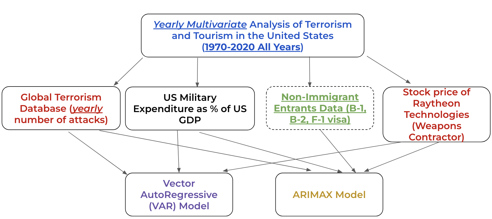
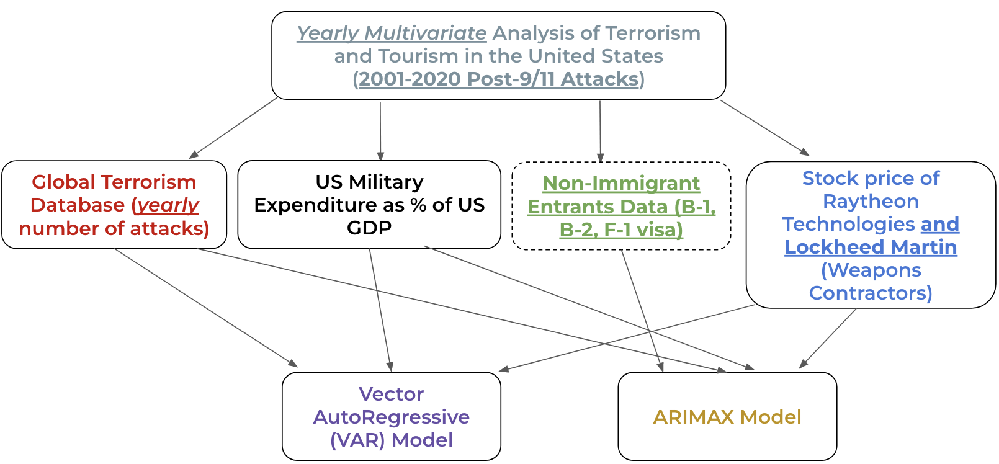

Conclusions
Big Picture


Although the project dived into answering several questions related to terrorist attacks in the United States, at the heart of these inquiries was the fundamental query of whether time-series modeling could help forecast the total number of terrorist attacks. The project aimed to answer this by utilizing both univariate and multivariate time series models, as well as through state-of-the-art Deep Recurrent Neural Networks. Auxiliary datasets collected to assist us in building the multivariate time-series models were US Military Expenditure, Number of Non-Immigrant Entrants, and Stock Prices of the largest weapon’s contractors in the US, Lockheed Martin and Raytheon Technologies.
However, before embarking on modeling, the project employed exploratory data analysis techniques to identify patterns and trends in the incidence and characteristics of terrorist attacks. Several time series models were also developed to analyze and forecast the frequency and severity of attacks, while considering different factors that may have influenced these outcomes.
Due to the highly complex nature of terrorism, both domestic and international, and the sheer enormity of data present in the The Global Terrorism Database™ (GTD) (“Codebook Methodology Inclusion Criteria and Variables - UMD,” n.d.), the project hit multiple roadblocks in an attempt to answer the central question fairly and objectively. However, the project uncovered valuable insights and lessons learned from the data, as well as limitations and challenges encountered along the way.
We gained preliminary insights about the monthly number of attacks through the univariate analysis segment. Then, with the help of a solid literature review to support current research and challenge the full model (1970-2020 ARIMAX), we established that yearly non-immigration entrants, including B-1 (Business), B-2 (Tourists), and F-1 (Students), do not statistically have an effect on yearly number of terrorist attacks in the US. Our findings are further supported when examining the murder rates of foreign-born terrorists from 1970 to 2020. The 9/11 attacks, which claimed the lives of 2,979 people (excluding the 19 hijackers), were a tragic and significant outlier in terms of the carnage inflicted. In fact, the number of casualties in the 9/11 attacks was over 200 times higher than the second deadliest attack on U.S. soil committed by foreign-born terrorists, which was the San Bernardino attack. From 1975 to September 11, 2001, only 23 murders were committed by 28 foreign-born terrorists, while terrorist attacks by native-born Americans claimed the lives of 264 people, and 68 were killed by unknown terrorists during the same period.
Data and its Complexity
The analysis relied on the Global Terrorism Database™ (GTD) (“Codebook Methodology Inclusion Criteria and Variables - UMD,” n.d.), a comprehensive dataset with over 136 fields. To ensure a thorough analysis, it was crucial to limit the data to a certain geographic location. There was no particular reason as to why the United States was chosen, even though a lot more attacks have taken place in other countries in the Middle East and Africa. Moreover, the GTD does not differentiate between domestic and international terrorism, which have different causes and characteristics, but for this project, both types were included under a single umbrella term: “terrorism”.
To use the GTD for time-series modeling, it had to be grouped into time periods, including months or years to count the number of attacks that occurred. However, this method led to many months where there were no attacks, and these “zero counts” made it harder to extract useful patterns in the data. However, there are specialized time-series models designed to handle this type of data.
Another challenge was that there was no information for the year 1993 in the GTD, but since the data was grouped into months or years, it was easier to fill in the missing information by using nearby data points. Furthermore, the auxilary datasets used in the analysis, like Raytheon Technologies’ stock price and Non-Immigrant Entrants, did not have information for the early 1970s and 1980s, which required filling in missing values to create more accurate multivariate models.
The GTD, admirably, also provides information about the type of attack, the type of weapon used by the perpetrator(s), and the type of victim affected by the attack. Although more data is desired for projects, it can be overwhelming trying to incorporate them to make the analysis as multi-faceted as possible. There exist multifarious combinations of models, differing by the aforementioned categorical variables, location, etc., that no one model can be the “ultimate” in explaining all these facets. Therefore, building as many models as possible would get us closer in extracting patterns and trends in the number of yearly attacks, but it can also be a double-edged sword. Essentially, the goal should be to create a parsimonious and interpretable model. This may require a trade-off between model complexity and predictive accuracy, but careful model selection and evaluation can help to strike a balance between these competing objectives.
Lastly, another key variable that could have been discussed alongside the number of attacks is the number of casualties resulting from the attacks. Again, this data, when aggregated, produced even more zero counts because nearly 80% of all terrorist attacks involved no casualties between 1970 and 2013 (“Terrorist Attacks in the u.s Between 1970 and 2013: Data from the ... - DHS,” n.d.). Initially, this variable was supposed to be the key target variable for multivariate analysis; however, upon conducting the literature review it was better to predict number of attacks, instead.
Results and Future Work
It was found that the SARIMA model and Deep Recurrent Neural Networks performed best in predicting the monthly number of terrorist attacks in the US. Yearly aggregated terrorist attacks were analyzed for the VAR and ARIMAX models because the auxiliary data did not have figures at the monthly level. For such models, especially Recurrent Neural Networks, it is best to input big data to obtain even more plausible predictions. Nonetheless, it was found through the how far can we predict with Recurrent Neural Networks section that the simpler the task, the simpler the model should be.
As mentioned in the above section that a major chunk of the monthly aggregated data contained zero’s, models such as Zero-Inflated Poisson Regression could be employed for future analysis. If this model yields more accurate predictions than the Recurrent Neural Networks, the popular saying by George Box, “All models are wrong, but some are useful”, would be a testament to the importance of using models that are directly related to the domain and question being addressed, rather than simply feeding the data into a neural network and hoping for the best.
All Cited Works (Alphabetical Order)
Baker , David. “The Effects of Terrorism on the Travel and Tourism Industry .” Technological University Dublin. International Journal of Religious Tourism and Pilgrimage. Accessed February 1, 2023. https://arrow.tudublin.ie/cgi/viewcontent.cgi?article=1052&context=ijrtp.
“Codebook Methodology Inclusion Criteria and Ariables - UMD.” Codebook Methodology Inclusion criteria and variables - UMD. University of Maryland. Accessed February 1, 2023. https://www.start.umd.edu/gtd/downloads/Codebook.pdf. “Download the Global Terrorism Database.” Global Terrorism Database. University of Maryland, National Consortium for the Study of Terrorism and Responses to Terrorism, 2001. https://www.start.umd.edu/gtd/contact/download.
Hartung, William D. “Profits of War: Corporate Beneficiaries of the Post-9/11 Pentagon Spending Surge.” Costs of War. Watson Institute for International and Public Affairs, Brown University, September 13, 2021. https://watson.brown.edu/costsofwar/files/cow/imce/papers/2021/Profits%20of%20War_Hartung_ Costs%20of%20War_Sept%2013%2C%202021.pdf.
“Nonimmigrant Admissions.” Nonimmigrant Admissions | Homeland Security. Department of Homeland Security, n.d. https://www.dhs.gov/immigration-statistics/nonimmigrant.
Nowrasteh, Alex. “Terrorists by Immigration Status and Nationality: A Risk Analysis, 1975–2017.” Cato.org. Cato Institute, May 27, 2019. https://www.cato.org/publications/policy-analysis/terrorists-immigration-status-nationality-risk-analysis-1975-2017#foreign-born-terrorism-risk-for-visas-issued-by-category.
Rosenau, William. “Leftist Terrorism in the United States.” Taylor & Francis. The Journal of Strategic Studies (2013). Accessed February 12, 2023. https://www.tandfonline.com/journals/fjss20.
Serrano, Richard A. “The 1970s Bombing Spree.” Los Angeles Times. May 19, 2008.
“SIPRI Military Expenditure Database.” SIPRI MILEX. STOCKHOLM INTERNATIONAL PEACE RESEARCH INSTITUTE, 1966. https://milex.sipri.org/sipri.
“Terrorist Attacks in the U.S between 1970 and 2013: Data from the … - DHS.” Terrorist Attacks in the U.S Between 1970 and 2013: Data from the Global Terrorism Database (GTD). START Consortium at the University of Maryland. Accessed February 12, 2023. https://www.dhs.gov/sites/default/files/publications/OPSR_TP_TEVUS_Terrorist-Attacks-US_1970-2013_Overview-508.pdf.
“World Tourism Organization.” UNWTO. Accessed February 1, 2023. https://www.unwto.org/.